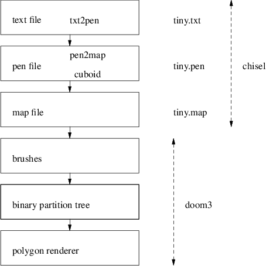
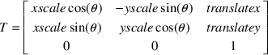
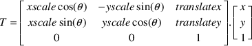

inputFile = None
defines = {}
verbose = False
debugging = False
autoLights = False
floor = []
rooms = {}
maxx, maxy = 0, 0
doorValue, wallValue, emptyValue = 0, -1, -2
versionNumber = 0.1
lightFrequency = 5
def usage (code):
print "Usage: txt2pen [-dhlvV] [-f frequency] [-o outputfile] inputfile"
print " -d debugging"
print " -h help"
print " -l automatic lighting"
print " -f frequency (every frequency squares place a light)"
print " -V verbose"
print " -v version"
print " -o outputfile name"
sys.exit (code)
class roomInfo:
def __init__ (self, w, d):
self.walls = w
self.doors = d
self.doorLeadsTo = []
self.monsters = []
self.weapons = []
self.ammo = []
self.lights = []
self.autoLights = []
self.worldspawn = []
def handleOptions ():
global debugging, verbose, outputName, autoLights, lightFrequency
outputName = None
try:
optlist, l = getopt.getopt(sys.argv[1:], ’:df:hlo:vV’)
for opt in optlist:
if opt[0] == ’-d’:
debugging = True
elif opt[0] == ’-h’:
usage (0)
elif opt[0] == ’-l’:
autoLights = True
elif opt[0] == ’-f’:
lightFrequency = int (opt[1])
elif opt[0] == ’-o’:
outputName = opt[1]
etc...
def checkLight (p, l, lightCount):
if lightCount == lightFrequency:
li = light () # create light
li.settype (’MID’) # on a pillar
l += [p + [li]] # [position and light]
lightCount = 0
else:
lightCount += 1
return l, lightCount
def generateRoom (r, p, mapGrid, start, i):
global verbose, rooms, debugging
if verbose:
print "room", r,
p = moveBy (p, [-1, -1], mapGrid)
if verbose:
print "top left is", p
s = p
walls, doors = scanRoom (s, p, mapGrid, [], [])
if debugging:
print walls
rooms[r] = roomInfo (walls, doors)
rooms[r].autoLights += introduceLights (p, mapGrid, [], [])
etc...
o = printMonsters (rooms[r].monsters, o)
o = printAmmo (rooms[r].ammo, o)
o = printWeapons (rooms[r].weapons, o)
if autoLights and (rooms[r].lights == []):
o = printLights (rooms[r].autoLights, o)
else:
o = printLights (rooms[r].lights, o)
o = printSpawnPlayer (rooms[r].worldspawn, o)
o.write ("END\n\n")
return o
$ cd $HOME/Sandpit/chisel/python
$ python pen2map.py -h
Usage: pen2map [-c filename.ss] [-dhmtvV] [-o outputfile] inputfile -c filename.ss use filename.ss as the defaults for the map file -d debugging -e provide comments in the map file -g type game type. The type must be ’single’ or ’deathmatch’ -h help -m create a doom3 map file from the pen file -s generate statistics about the map file -t create a txt file from the pen file -V generate verbose information -v print the version -o outputfile place output into outputfile

brushDef3
{
// floor of fbrick
(0 0 -1 0) ((0.0078125 0 0.5) (0 -0.0078125 -1)) "textures/hell/cbrick2b" 0 0 0
// ceiling of fbrick
(0 0 1 -288) ((0.0078125 0 0.5) (0 -0.0078125 -1)) "textures/hell/cbrick2b" 0 0 0
// top most horizontal of fbrick
(-1 0 0 -480) ((0.0078125 0 0.5) (0 -0.0078125 -1)) "textures/hell/cbrick2b" 0 0 0
// left most vertical of fbrick
(0 -1 0 -576) ((0.0078125 0 0.5) (0 -0.0078125 -1)) "textures/hell/cbrick2b" 0 0 0
// bottom most horizontal of fbrick
(1 0 0 432) ((0.0078125 0 0.5) (0 -0.0078125 -1)) "textures/hell/cbrick2b" 0 0 0
// right most vertical of fbrick
(0 1 0 528) ((0.0078125 0 0.5) (0 -0.0078125 -1)) "textures/hell/cbrick2b" 0 0 0
}
(0 0 1 -288)


This document was produced using groff-1.22.